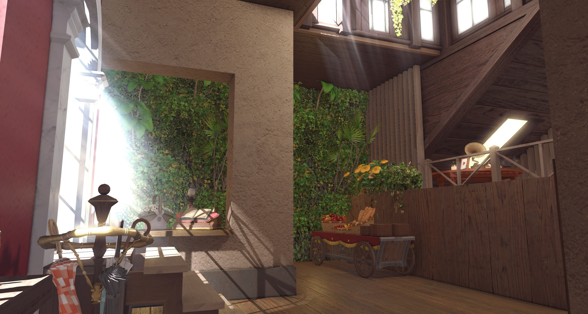

NO · 01
吃芒狗店長兼店狗
owner · roaster
樂於當小狗的拉拉菲爾族。
2026 年的春天，畝湯在穹頂皓天的一角悄然萌芽。 店長一點一滴傾注心力，想為每一位到訪的朋友，打造一個能安心卸下疲憊、舒緩肩膀的溫暖避風港。
為了守護這份安靜的空間，目前店內採全預約制。但願這座小小的咖啡廳，能成為溫柔接住你、療癒你的一方天地。
— 店主 吃芒狗為了讓每位客人都能舒服地慢慢來，
幾個小小的約定想先跟你說 ✿
一杯飲品或一份餐點皆可。
為了讓每一位夥伴都能享有舒適寧靜的時光，在室內走動時，請協助我們盡量開啟走路模式，避免奔跑或大幅度的跳躍跑動喔。
若有合照或較親密的互動需求，請先詢問店員，並保持適當的社交距離。
owner · roaster
樂於當小狗的拉拉菲爾族。
pastry chef
把每一個早晨揉進酥皮裡。
